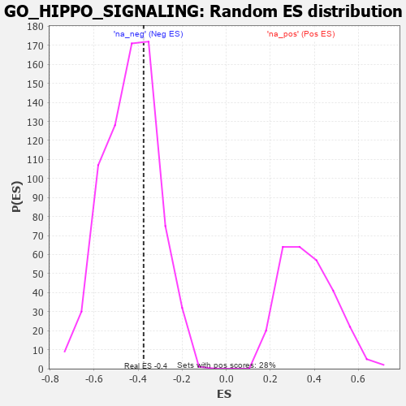

| | | Dataset | 7d |
| Phenotype | NoPhenotypeAvailable |
| Upregulated in class | na_neg |
| GeneSet | GO_HIPPO_SIGNALING |
| Enrichment Score (ES) | -0.37511855 |
| Normalized Enrichment Score (NES) | -0.8639709 |
| Nominal p-value | 0.6634483 |
| FDR q-value | 0.97009987 |
| FWER p-Value | 1.0 |
Table: GSEA Results Summary
 Fig 1: Enrichment plot: GO_HIPPO_SIGNALING
Fig 1: Enrichment plot: GO_HIPPO_SIGNALING
Profile of the Running ES Score & Positions of GeneSet Members on the Rank Ordered List
| PROBE | GENE SYMBOL | GENE_TITLE | RANK IN GENE LIST | RANK METRIC SCORE | RUNNING ES | CORE ENRICHMENT | | 1 | TEAD4 | | | 286 | 0.846 | 0.0666 | No |
| 2 | YAP1 | | | 1041 | 0.475 | 0.0296 | No |
| 3 | TEAD1 | | | 1298 | 0.428 | 0.0493 | No |
| 4 | MOB1B | | | 1991 | 0.306 | -0.0005 | No |
| 5 | WTIP | | | 2228 | 0.272 | 0.0028 | No |
| 6 | FRMD1 | | | 2962 | 0.156 | -0.0705 | No |
| 7 | MARK3 | | | 3031 | 0.145 | -0.0615 | No |
| 8 | DLG5 | | | 4619 | -0.121 | -0.2462 | No |
| 9 | NEK8 | | | 5071 | -0.217 | -0.2766 | No |
| 10 | LATS1 | | | 5412 | -0.298 | -0.2831 | No |
| 11 | STK4 | | | 6145 | -0.518 | -0.3123 | Yes |
| 12 | WWTR1 | | | 6631 | -0.729 | -0.2849 | Yes |
| 13 | FAT4 | | | 6948 | -0.901 | -0.2153 | Yes |
| 14 | NPHP4 | | | 6991 | -0.931 | -0.1076 | Yes |
| 15 | CASP3 | | | 7747 | -1.902 | 0.0282 | Yes |
Table: GSEA details [plain text format]

Fig 2: GO_HIPPO_SIGNALING: Random ES distribution
Gene set null distribution of ES for GO_HIPPO_SIGNALING